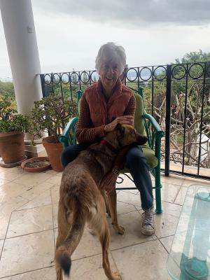

Our Founders
Three people brought together by a shared concern for senior dogs.
👩
Jena Marie Olio
Co-Founder
Over 20 years in dog rescue and training, Jena runs a sanctuary for dogs whose owners have passed away. She has long been dedicated to caring for senior dogs in their final stage of life.

Ronni Coppola
Co-Founder
A lifelong dog lover who has rescued and fostered some of the most vulnerable dogs in the community. Her compassion and hands-on care make a daily difference in the lives of our dogs.

Juanita Crampton
Founder, Tail End Planning
Founder of the Tail End Planning program, helping pet owners prepare for their animals' future care. Her work led to a deeper focus on senior stray dogs and the creation of the sanctuary.